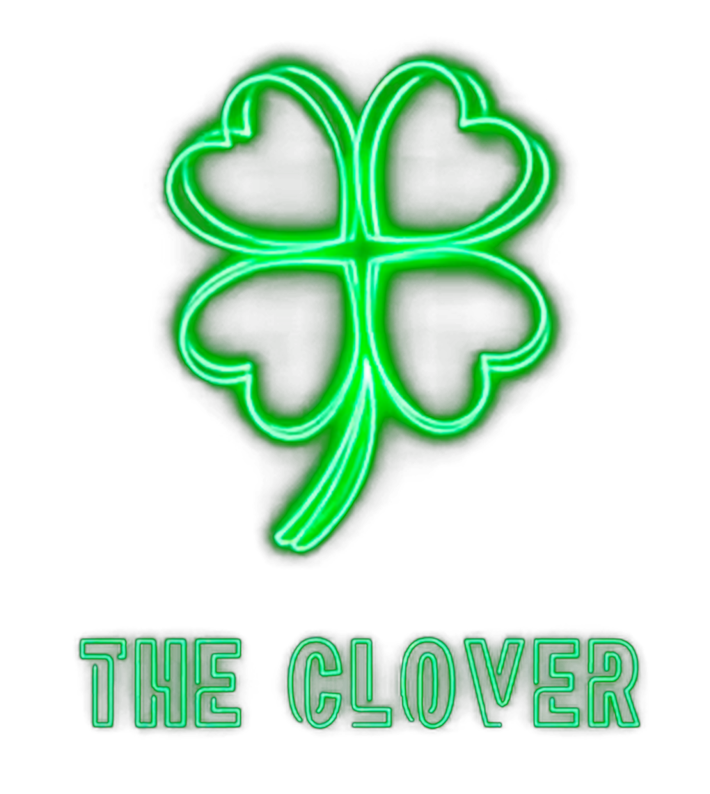
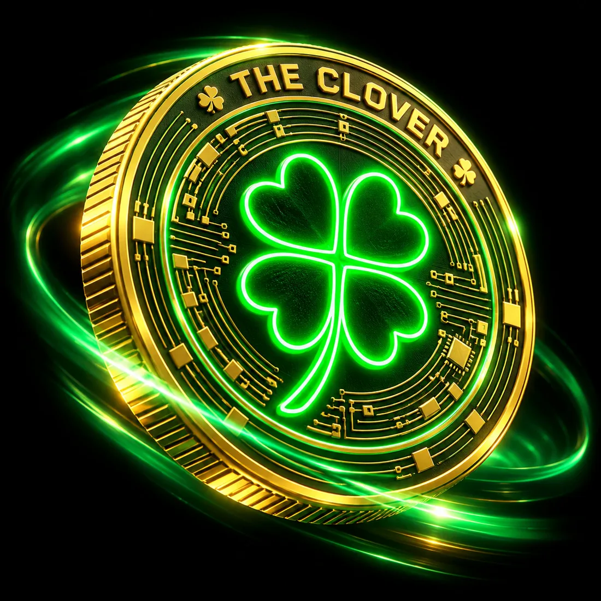
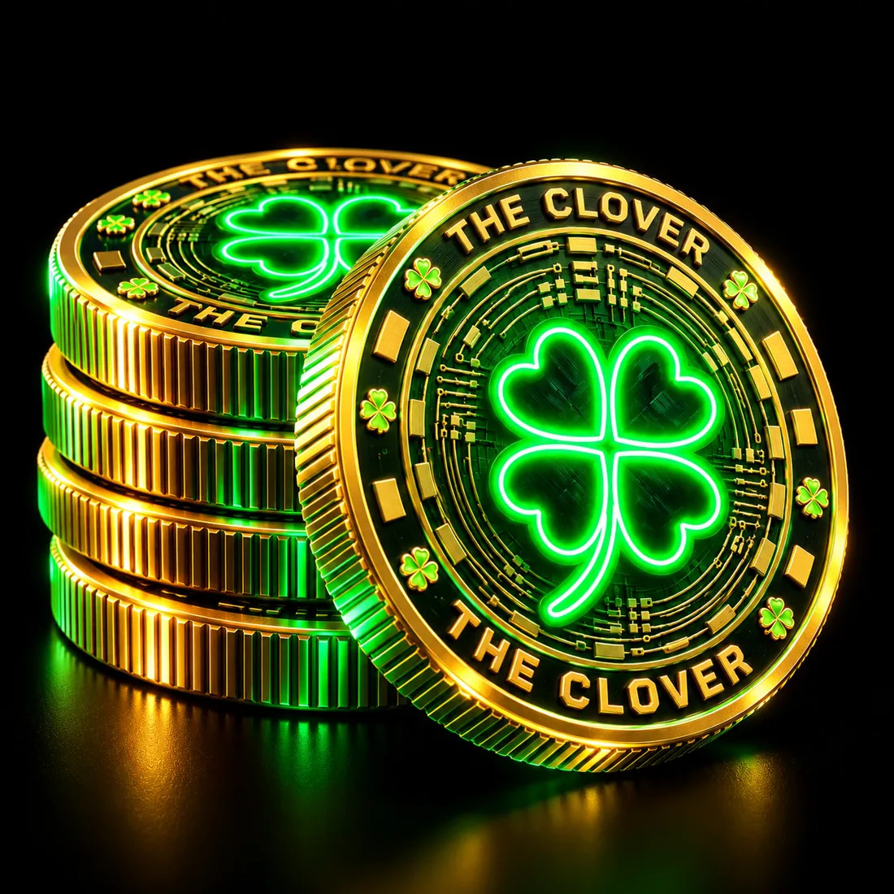
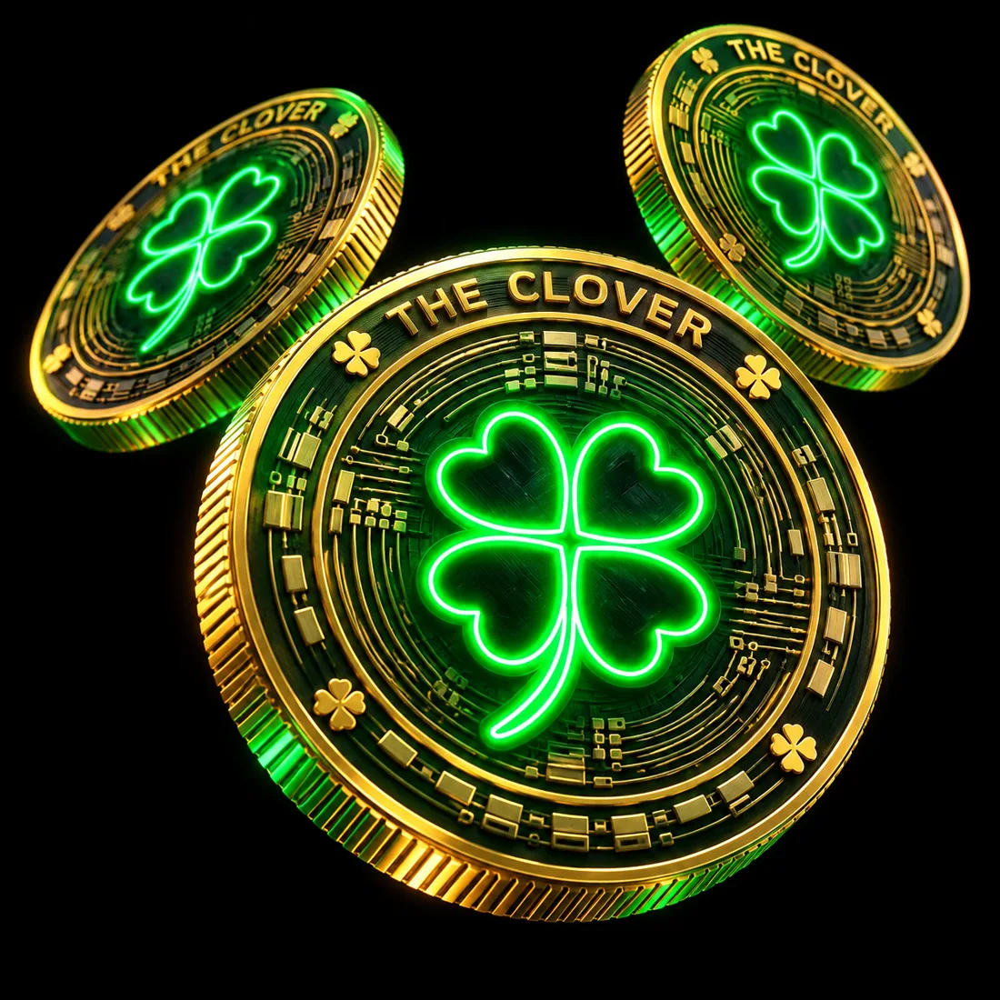
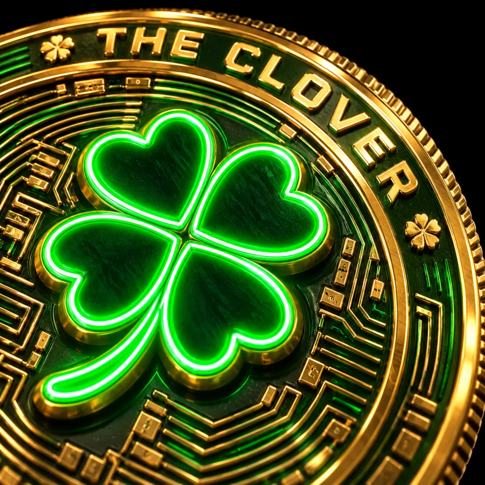
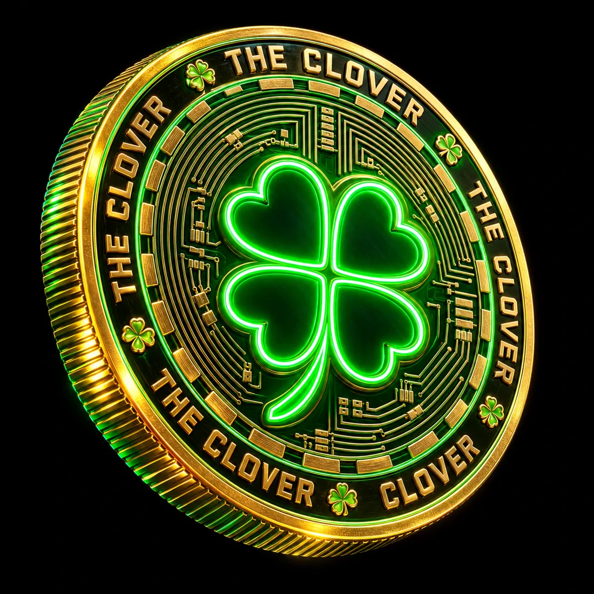
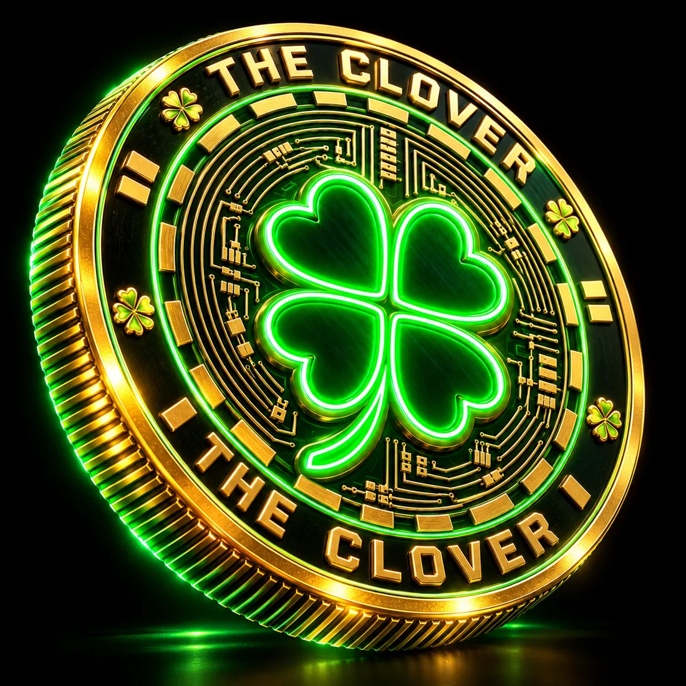

Descentralizada
La red no depende de un servidor ni de una empresa. La sostienen los nodos que la ejecutan.

Suerte descentralizada.
Una criptomoneda con forma de trébol: cuatro hojas, cuatro pilares. Gira la moneda con el scroll, mira cómo se encadena cada bloque y pregúntale lo que quieras a Clover AI.
01 · La moneda
02 · Blockchain
03 · Cuatro hojas
La red no depende de un servidor ni de una empresa. La sostienen los nodos que la ejecutan.
Pensada para confirmar envíos sin esperar días ni pasar por intermediarios.
Firmas criptográficas y un registro público que cualquiera puede verificar.
Sin fronteras ni horarios: basta una billetera y conexión a internet.
04 · Colección






Imágenes conceptuales de la marca. No representan una moneda física a la venta.
05 · Token
Preferimos un dato vacío a uno inventado. Estos campos se completarán cuando el equipo publique el lanzamiento oficial. Hasta entonces, cualquier contrato que circule no es oficial.
Una de autocustodia, compatible con la red que se anuncie.
En papel, offline. Nadie del equipo te la pedirá jamás.
Copia la dirección solo desde esta web o los canales oficiales.
Clover AI te explica cada paso si algo no está claro.
06 · Hoja de ruta
Propuesta de fases. Las fechas las anunciará el equipo.
Identidad, web y comunidad fundadora.
Lanzamiento del token y contrato verificado públicamente.
Utilidades, alianzas y herramientas para holders.
Expansión global y gobernanza de la comunidad.
07 · Preguntas
Clover AI conoce el proyecto, explica conceptos cripto en lenguaje sencillo y te avisa cuando un dato aún no es oficial.
Conectando…
No es asesoría financiera. Nunca compartas tu frase semilla.